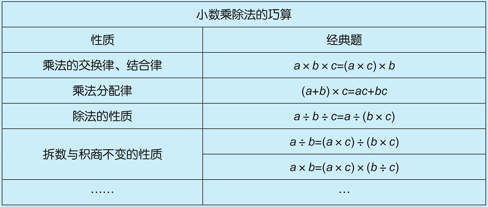
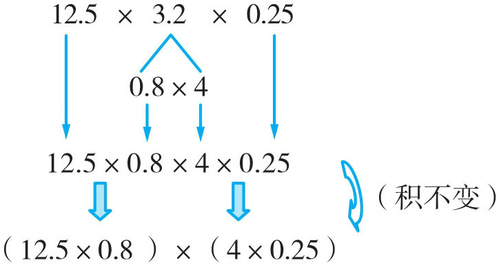
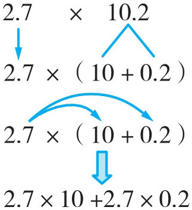
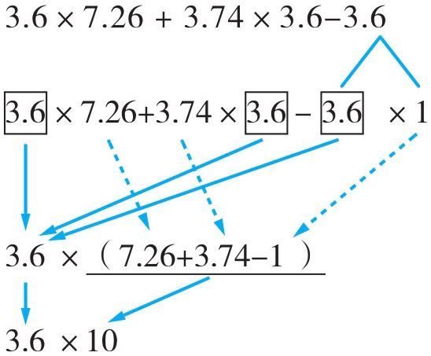
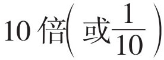
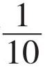
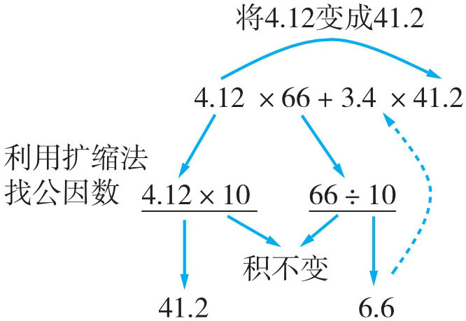
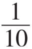
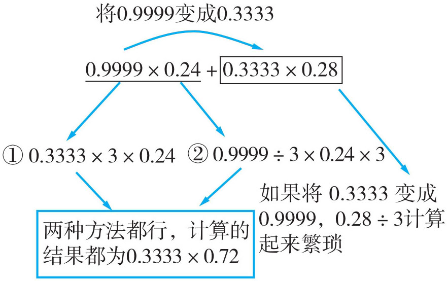
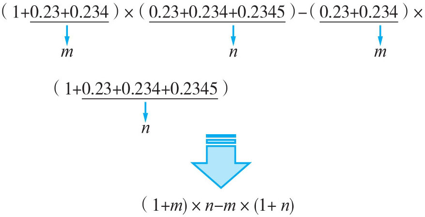

例1 计算：12.5×3.2×0.25
因为125与8、25与4都是特殊的关系数，它们的乘积是1000和100，所以我们见了12.5与0.25就试着找8和4，正好3.2可以分成0.8与4或8与0.4的积。

12.5×3.2×0.25=12.5×0.8×4×0.25=(12.5×0.8)×(4×0.25)=10×1=10
注：个别简单步骤可以省略。
例2 计算：2.7×10.2
观察数字的特征，10.2可以分成10与0.2的和，再根据乘法分配律可以使计算简便，如果将2.7分拆，计算相对要繁杂得多。图示如下：

2.7×10.2=2.7×(10+0.2)=2.7×10+2.7×0.2=27+0.54=27.54
例3 计算：3.6×7.26+3.74×3.6-3.6
从题中数字的特征发现，有相同的因数3.6，并且7.26与3.74的和刚好为一个整数，把最后的3.6表示成3.6×1，故可以逆用乘法分配律使计算简便。图示如下：

3.6×7.26+3.74×3.6-3.6=3.6×(7.26+3.74-1)=3.6×10=36
例4 计算：4.12×66+3.4×41.2
从题中的两个数据4.12与41.2发现，它们的数字一样，但小数点的位置不一样，如果将其中的一个数扩大（或缩小）到原数的

，相对应的一个因数缩小（或扩大）到原数的
（10倍），就可以利用乘法分配律进行简算。图示如下：
注：也可以将41.2缩小为原数的

变成4.12，3.4扩大到原数的10倍。方法一：4.12×66+3.4×41.2=(4.12×10)×(66÷10)+3.4×41.2=41.2×6.6+3.4×41.2=41.2×(6.6+3.4)=41.2×10=412
方法二：4.12×66+3.4×41.2=4.12×66+(3.4×10)×(41.2÷10)=4.12×66+34×4.12=4.12×(66+34)=4.12×100=412
例5 计算：0.9999×0.24+0.3333×0.28
从题中的数据可知0.9999与0.3333是整数倍关系，可以将两数进行扩大或缩小进行互化，又知0.9999转化为0.3333较容易，图解如下：

0.9999×0.24+0.3333×0.28=0.3333×(3×0.24)+0.3333×0.28=0.3333×(0.72+0.28)=0.3333×1=0.3333
例6 计算(1+0.23+0.234)×(0.23+0.234+0.2345)-(0.23+0.234)×(1+0.23+0.234+0.2345)
观察每个括号里的数，发现几个括号里的数都比较复杂，但是都有相同的部分，我们可以把相同的部分用字母来代替，如：0.23+0.234用m 代替，0.23+0.234+0.2345用n 代替。

注：把相同的部分用字母代替，这叫换元法！
解：设0.23+0.234=m ，0.23+0.234+0.2345=n ，则1+0.23+0.234=1+m ，1+0.23+0.234+0.2345=1+n 。
原式=(1+m )×n -m ×(1+n )=n +m ×n -m -m ×n =n -m =(0.23+0.234+0.2345)-(0.23+0.234)=0.2345
1．12.5×0.32×25
2．125×8.8
3．0.46×0.35+0.46×0.65
4．7.55×1.5+1.5+2.45×1.5
5．27.95×101-27.95
6．10.2×10.1
7．55÷0.25
8．111÷12.5
9．10.4×0.68+0.34×2×4.6
10．1.5×0.9+0.15
11．9.73÷12.5÷0.8
12．28.9×4÷289
13．0.7777×0.7+0.1111×2.1
14．0.666×1.6+0.222×5.2
15．0.888×2.1+0.444×2.6-0.222×3.6
16．2.22×9.9+6.66×6.7
17．7.74×(2.8-1.3)+1.5×2.26
18．3.65×4.7-36.5×0.37
19．3.026×350+30.26×42+302.6×2.3
20．(1+0.5)+(2+0.5×2)+(3+0.5×3)+…+(99+0.5×99)+(100+0.5×100)
21．(1+0.25+0.257)×(0.25+0.257+0.2579)-(0.25+0.257)×(1+0.25+0.257+0.2579)